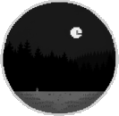

Select location

About location
Location - cemetery
The dark and gloomy cemetery, shrouded in the shroud of night, is a testament to mystical past events and sinister secrets lurking in its hidden corners. The shadows of trees and graves seem like ghosts, captivated by the eternal gloom. The dark and gloomy cemetery, shrouded in the shroud of night, is a testament to mystical past events and sinister secrets lurking in its hidden corners. The shadows of trees and graves seem like ghosts, captivated by the eternal gloom.